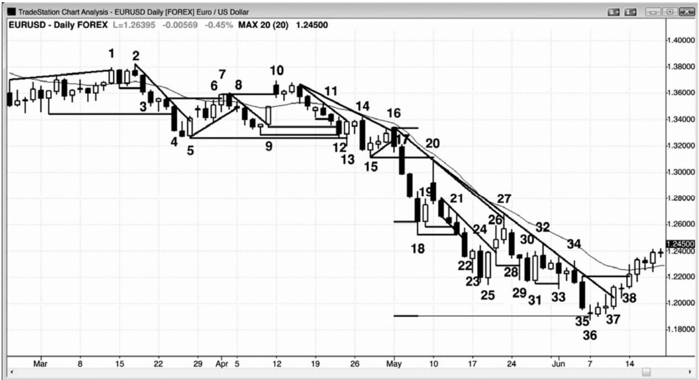
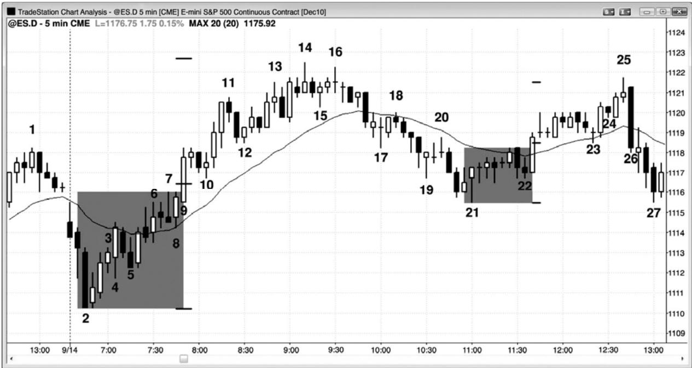
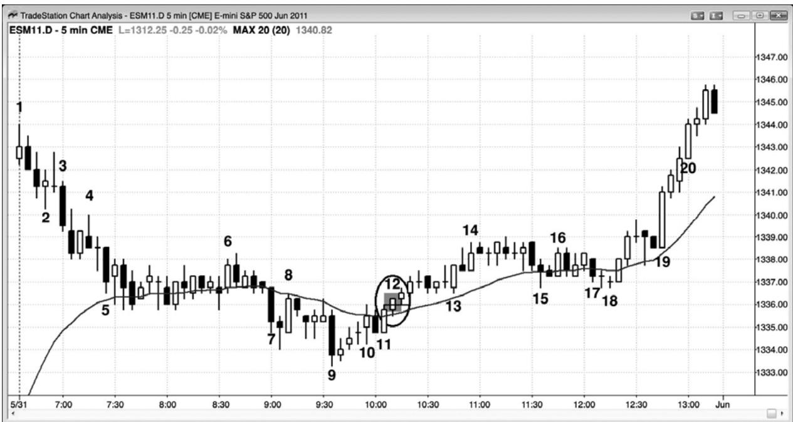

第2章 突破强弱的征兆¶
第 2 章 突破强弱的征兆
成功突破的最低标准是交易者能够在突破后入场，并且至少获得一笔刮头皮利润。最强的突破将引起强劲的趋势，可能持续几十棒。有一些早期征兆增加了突破很可能强到令市场到达一个或多个测量运动目标的可能性。举例说明，多头突破具有如下特征越多，突破就很可能越强：
突破棒有一个很大的多头趋势实体，尾线很短或没有尾线。棒线越大，突破越可能成功。
如果成交量是近期棒线平均成交量的 10 到 20 倍，那么坚持到底买入和测量运动形成的几率将有所增加。
尖峰走得非常远，持续了几条棒线，并且突破了几个阻力位，比如均线、先前的波段高点和趋势线，而且每次突破都超越阻力位很多个跳动。
在突破的第一棒形成期间，市场花费大部分时间在它的高点附近运动，而且回撤幅度较小（小于正在形成中的棒线高度的四分之一）。
存在紧迫感。你感觉自己不得不买入，但是你想要一个回撤，然而它永远没有出现。
接下来的两三条棒线也有着多头实体，这些实体的大小至少与最近的多头和空头实体差不多。即使这些实体相对较小，尾线比较突出，但是，如果坚持到底棒（初始突破棒线之后的棒线）很大，那么趋势继续的几率就比较高。
尖峰增长至 5 到 10棒，没有超过 1 棒左右的回撤。
当多头突破向上超越前一重要波段高点时，如果刮头皮交易者在那一波段高点上方1个跳动处利用止损单入场，那么在那一高点之上的运动幅度足以令他获利。
尖峰中有一棒或几棒的低点位于前一棒收盘价或只比前一棒收盘价低 1 个跳动。
尖峰中有一棒或几棒的开盘价高于前一棒的收盘价。
尖峰中有一棒或几棒的收盘价在其高点，或者只比其高点低 1 个跳动。
多头趋势棒之后的棒线的低点位于或高于多头趋势棒线之前的棒线的高点，形成一个微型缺口，这是一种强势征兆。这些缺口有时会变为测量缺口。虽然它们对交易的意义不大，但是它们可能代表着更小时间框架中艾略特浪 1 高点和浪 4 回撤之间的价差，可以触及，但不能重叠。
整体来看可能形成一个突破，比如回撤之后的趋势恢复，或者在空头趋势线被向上
突破后，对空头低点的测试，形成更高低点或更低低点。
市场最近已经有几个强势多头趋势日。
交易区间中的买压逐渐增长，表现为很多大多头趋势棒，而且区间中的多头趋势棒明显比空头趋势棒占优势。
仅在三条或更多条突破棒线之后，才出现第一次回撤。
第一次回撤只持续一两棒，它前面是一条不强的空头反转棒。
第一次回撤并未触及突破点，而且没有击中盈亏平衡止损（入场价位）。
突破反转了很多近期的收盘价和最高价。举例说明，当有一条空头通道和一条大多头棒线形成时，这条突破棒的最高价和收盘价超越了 5 条、甚至 20 条或更多棒线的价反转要更强的信号。
如果一个多头突破具有更多的下列特征，那么它更可能失败，要么引出一个交易区间，要么引起市场反转：
突破棒的多头实体较小或者为平均尺寸，有一条很长的上尾线。
下一棒拥有一个空头实体，要么是一条空头反转棒，要么是一条空头内包棒；那一棒在低点或低点附近收盘，实体大小与突破前棒线的平均实体大小差不多（不是只有一条跳动高的空头实体）。
整个背景使得突破不大可能产生，比如向上测试交易区间日高点的反弹，反弹过程中拥有空头棒，很多重叠棒，棒线拥有突出的尾线，而且上涨过程中出现几次回撤。
市场已经在交易区间内运动了好几天。
P47
突破棒的后一棒是一条强空头反转棒或空头内包棒。
多头趋势棒的后一棒的低点，低于多头趋势棒的前一棒的高点。
第一个回撤在反转两棒后出现。
回撤延续了若干棒。
回撤之后的趋势恢复停止，市场形成一个具有空头信号棒的更低高点。
尖峰只向上突破波段高点、空头趋势线或多头趋势通道线之类的阻力位一个跳动左右，然后便向下反转。
尖峰只是向上突破一个阻力位，在向上突破其他略高一点的阻力位前，市场回撤。
使用止损单在前一波段高点上方买进的交易者，未能获得一笔刮头皮利润，市场便
向下回撤。
当突破棒正在形成时，市场回撤幅度超过那一棒高度的三分之二。
当突破棒正在形成时，市场两次或多次的折返幅度至少为那一棒高度的三分之一。
回撤跌破突破点。任意棒线的低点与它前面第二棒的高点之间没有缺口。
回撤跌破尖峰第一棒的低点。
回撤击中盈亏平衡止损。
存在困惑感。你感觉不确定突破是会成功还是会失败。
把上述内容反过来，对于空头突破也是正确的。空头突破具有如下特征越多，突破很可能越强：
突破棒有一个很大的空头趋势实体，尾线很短或没有尾线。棒线越大，突破越可能成功。
如果成交量是近期棒线平均成交量的 10 到 20 倍，那么坚持到底卖出和测量运动形成的几率将有所增加。
尖峰走得非常远，持续了几条棒线，并且突破了几个支撑位，比如均线、先前的波段低点和趋势线，而且每次突破后的运动幅度都达到了很多个跳动。
当突破棒的第一棒形成时，市场大部分时间在它的低点附近运动，而且回撤幅度较小（小于正在形成的棒线的高度的四分之一）。
存在紧迫感。你感觉自己不得不卖出，但是你想要一个回撤，然而它一直没有出现。
接下来的两三条棒线也有着空头实体，这些实体的大小至少与最近的多头和空头实体的平均尺寸差不多。即使这些实体相对较小，尾线比较突出，但是，如果坚持到底棒（初始突破棒线之后的棒线）很大，那么趋势继续的几率就比较高。
尖峰增长至5到10棒，没有超过1棒左右的回撤。
当空头突破跌破前一重要波段低点时，如果刮头皮交易者在低于那一波段低点 1 个跳动处利用止损订单入场，那么在那一低点之下的运动幅度足以令他获利。
尖峰中的一棒或多棒的高点位于前一棒线的收盘价，或者只比前一棒收盘价高出 1个跳动。
尖峰中有一棒或几棒的开盘价低于前一棒的收盘价。
尖峰中有一棒或几棒的收盘价在其低点，或者只比其低点高 1 个跳动。
空头趋势棒的后一棒的高点位于或低于空头趋势棒的前一棒的低点，形成一个微型缺口，这是一种强势征兆。这些缺口有时会变为测量缺口。虽然它们对交易并不重要，但是它们可能代表着更小时间框架中艾略特浪 1 低点和浪 4 回撤之间的价差，可以触及，但不能重叠。
整个背景使得突破很可能形成，比如回撤之后的趋势恢复，或者在多头趋势线被向下强势突破后，对多头高点的测试，形成更低高点或更高高点。
市场近期已经出现几个强空头趋势日。
交易区间中的卖压逐渐增长，表现为很多大空头趋势棒，而且区间中的空头趋势棒明显比多头趋势棒占优势。
仅在三条或更多条突破棒线之后，才出现第一次回撤。
第一次回撤仅持续一两棒，它前面是一条不强的多头反转棒。
第一次回撤并未触及突破点，而且没有击中盈亏平衡止损（入场价位）。
突破反转了很多近期的收盘价和最低价。举例说明，当有一条多头通道和一条大空头棒形成时，这条突破棒的最低价和收盘价低于 5 条、甚至 20 条或更多棒线的最低价和收盘价。大量棒线被空头棒线收盘价反转，是一个比类似数量棒线被其最低价反转要更强的信号。
如果一个空头突破具有更多的下列特征，那么它更可能失败，要么引出一个交易区间，要么引起市场反转：
突破棒的空头实体较小或者为平均尺寸，有一条很长的下尾线。
P48
下一棒拥有一个多头实体，要么是一条多头反转棒，要么是一条多头内包棒；那一棒在高点或高点附近收盘，实体大小与突破前棒线的平均实体大小差不多（不是只有一个跳动高的多头实体）。
整个背景使得突破不大可能产生，比如向下测试交易区间日低点的抛盘，抛盘过程中拥有多头棒，很多重叠棒，棒线拥有突出的尾线，而且下跌过程中出现几次回撤。
市场已经在交易区间内运动了若干天。
突破棒的后一棒是一条强多头反转棒，或者是一条多头内包棒。
空头趋势棒的后一棒的高点，高于空头趋势棒的前一棒的低点。
第一个回撤在反转两棒后出现。
回撤延续了若干棒。
回撤之后的趋势恢复停止，市场形成一个具有多头信号棒的更高低点。
尖峰只向下突破波段低点、多头趋势线或空头趋势通道线之类的支撑位一个跳动左右，然后便向上反转。
尖峰只是向下突破一个支撑位，在向下突破其他略低一点的阻力位前，市场回撤。
使用止损单在前一波段低点下方买进的交易者，未能获得一笔刮头皮利润，市场便向上回撤。
当突破棒正在形成时，市场回撤幅度超过那一棒高度的三分之二。
当突破棒正在形成时，市场两次或多次的折返幅度至少为那一棒高度的三分之一。
回撤上涨超越突破点。任意棒线的高点与它前面第二棒的低点之间没有缺口。
回撤向上超越尖峰第一棒的高点。
回撤击中盈亏平衡止损。
存在困惑感。你感觉不确定突破是会成功还是会失败。
对于交易者而言，突破暗示着力量和可能的新趋势。它出现在双向交易期之后，在双向交易期内，多空双方一致同意存在价值，双方都愿意建仓。在突破期间，双方现在一致认为市场应该在另一价位找到价值，突破便是寻找那一新价位的快速运动。市场偏爱不确定性，在寻找新的价值价位时快速运动。突破是一段时间的确定性。多空双方确信，空头突破期内的价格太高，多头突破期内的价值太低，坚持到底的几率通常约为 60%到 70%。市场迅速运动，寻找多空双方一致认为存在交易价值的新价位。这就意味着市场再度回到不确定性，没有人知道哪一方将会获胜并成功制造下一个突破。不确定性是交易区间的标志，所以突破是在寻找交易区间，是在寻找不确定性，等距运动的方向性几率是 50%。尖峰之后的通道通常制造一个近似的交易区间的顶部和底部，通道之后常常是交易区间。当市场在通道内向上运动时，等距运动的方向几率逐渐降低，当它到达通道终点时，方向几率实际上是偏向于反转的。这是因为交易区间突破通常失败，市场很可能向方向概率为 50%的区间中部折返。区间中部是突破的目标，在它形成前，它的位置未知的。
突破以趋势棒开始，趋势棒可大可小，但是与近期棒线相比，它通常要略大。记住，所有趋势棒都应被视作突破、尖峰、缺口和高潮。当它较小时，很容易忽视它的重要性，但是，如果后面出现一些横盘价格行为，然后是稳定的定向运动，那么突破正在进行。当异常大的趋势棒令市场从交易区间内快速运动而出时，产生的突破是最容易捕捉的，不久将出现其他一些同向趋势棒。无论突破是单条趋势棒，还是一系列趋势棒，它都是一个尖峰。正如之前提到过的，几乎所有趋势都可被看作某种类型的尖峰和通道趋势。举例说明，如果一条多头突破棒拥有很强的收盘，而且下几棒也拥有很强的收盘，尾线短小或不存在，高点和低点呈趋势变化（没有回撤棒），而且连续多头趋势棒的实体之间几乎没有重叠，那么市场在反转跌破突破运动起点之前，很可能会向上运动至比现在时刻价位更高的某个价位。如果趋势继续，那么它的动能最终会放缓，常常会形成某种通道。
交易中最重要的一个概念是大部分突破失败。因此，在每个突破的突破方向上入场是一种失败的策略。但是，常常存在价格行为事件会增加突破成功的可能性。举例说明，如果有一轮很强的空头趋势，然后是向均线的两条腿上涨，那么在市场向下突破这个空头旗形时做空便是一笔明智的交易。但是，如果市场不是处于趋势之中，存在大量的重叠棒线和大尾线棒线，那么市场是处于平衡状态。多空双方都在非常舒服地建仓，交易区间正在形成。如果市场接下来出现一条多头趋势棒，向交易区间的顶部延伸，甚至越过交易区间的顶部，那么乐于在区间中部卖空的空头甚至会在这一更好的价位更积极地卖空。另外，乐于在区间中部买进的多头在高位买进时将变得犹豫不决，在区间顶部迅速离场。多空双方的这种行为在区间中部产生一种磁性拉力，结果使得大部分交易都产生于区间中部。甚至当市场成功突破并形成一波等于区间高度的测量运动时，那种磁性拉力仍倾向于把市场拉回区间之内。这便是
P49
如果你观察任意一张图表，那么你会注意到大量具有相对较大的实体和较小尾线的多头和空头趋势棒。这些棒线中的每一条都是一个突破尝试，几乎都未能引发一轮趋势，相反地，交易区间继续。在 5 分钟电子迷你图表上，这些可能代表着买进和卖出程序在试图令市场运动。有些算法被设计为在与这些趋势棒相反的方向上交易，预期大多数会失败。当老手们认为突破可能会失败时，他们也会这么做。举例说明，如果出现一个突破，表现为一条大型多头趋势棒，那么这些程序可能会在那一棒的收盘价、高点上方、下一两棒的收盘价或者它们的低点下方做空。如果足够的程序交易金额反向（卖方）进入，那么它们会压倒那些试图发动多头趋势的程序，交易区间将会继续。最后，突破将会成功。突破棒将会比较大，它形成过程中的回撤较小，突破将在接下来的几棒上有着很好的坚持到底。试图逆运动交易的程序正在失败，他们将回补亏损的头寸，驱动趋势继续。这种力量将吸引其他趋势交易者，他们中有很多是动能交易者，每当他们看到动能便迅速入场。
一旦每个人都认为市场现在正在做趋势运动，那么在出现回撤前市场可能会运动得比较远。为什么会那样呢？试举一例，市场以一个尖峰突破进入一轮强多头趋势，那个尖峰包含三条强多头趋势棒。交易者们认为市场不久将涨得更高，不确定市场是否会在接下来的几棒内下跌。这使得空方买回他们的空头，拉升市场进一步上涨。投资不足的多头认为市场近期将会走高，在市价或两三个跳动的回撤买进，要比等待8到10个跳动的回撤或向均线的回撤买进，会使他们赚得更多。这也会拉升市场。在市场上涨过程中，由于多方和空方差不多都是以市价买进，所以一直没有出现回撤，或者在市场远高于当前价位后至少 5 到 10棒都没有出现。
这将在第 8 章进行更细致地讨论，但是在突破中，交易者们随时愿意在市价买进，因为他们认为自己赚到至少与风险同样多点数的几率大于 50%。当突破很强时，几率通常为 60%到 70%，甚至更高。当尖峰顶部高于尖峰底部 4 点时，如果他们在 5 分钟电子迷你图上的最高点买进，那么他们相信，在他们的 4 点止损被击中前，市场会上涨 4 点的几率可能为 60%或更高。你怎么能保证这一点呢？因为当胜率远低于 60%时，风险与回报一样大在数学上是不明智的，所以机构不会做这样的交易。因为市场仍在上涨，所以机构正在交易。因为只要市场仍未跌破尖峰顶部，交易就一直是有效的，所以他们所冒的风险是跌至尖峰底部。他们知道，尖峰通常会上涨约一波测量运动的幅度，也就是他们的利润目标，是他们的回报，等于他们的风险。如果尖峰在暂停前又上涨两点，那么尖峰的高度就达到 6 点。如果那是尖峰的终点，那么他们会假定市场在下跌 6 点前再上涨 6 点的几率约为 60%。这就意味着在低位买进的所有多头，市场在击中他们的 4 点止损前再上涨 6 点的几率为 60%。举例说明，在尖峰为 4 点时买进的多头，现在冒着 4 点的风险去赚取 8 点的利润，而且胜率为 60%，这在数学上非常有利的。他们预期市场有 60%的几率会测试尖峰收盘上方 6 点处的价位，而尖峰收盘比他们的入场高两点，于是他们的利润目标为 8 点。
当突破成功，引起一轮趋势时，在第一波快速的运动之后，动能放缓，双向交易征兆形成，比如出现重叠棒线，尾线变长，出现反向趋势棒，以及回撤棒。虽然趋势可能会持续很长时间，但是趋势的这一部分通常会被回溯，成为交易区间的一部分。举例说明，在尖峰和通道多头趋势形态中，尖峰是突破，通道通常成为交易区间的第一条腿，所以通常会被回溯。一般地，市场最后会一路回撤至通道起点，完成刚开始的交易区间的第二条腿。在那个多头突破的例子中，市场接下来通常会尝试在那个支撑位向上反弹。结果产生一个双重底多头旗形，有时会使市场向上突破新的区间，其余时间里，该形态演变为延长的交易区间，比如紧凑的交易区间或三角形。较少情况下，接下来市场会反转。
在 5 分钟电子迷你图表上，每天都有很多次突破尝试，但是大多数在一两条趋势棒之后便宣告失败。它们最有可能代表着某机构程序交易的开始，但是被其他机构的反向程序所压倒。当足够多的机构同时运行同向程序时，他们的程序就有能力推动市场至一个新的价位，突破将会成功。但是，从来没有什么是 100%确定的，即使最强的突破也有大约 30%的失败率。
当突破非常强时，通常会形成三条或多条尾线短小、几乎没有重叠的趋势棒。这就意味着交易者们不是在等待明显的回撤。他们担心市场直到运动得非常远才可能出现回撤，他们希望确保至少捕捉到部分趋势。他们会在市价和一两个跳动的微型回撤入场，他们持续的订单将给趋势带来动力，阻碍了明显回撤的形成。
P50
突破棒常常伴随着巨大的成交量，有时达到平均成交量的 10 到 20 倍。成交量越高，尖峰中的棒线就越多，就越可能出现明显的坚持到底运动。突破之前，多空双方都在逐步加仓，争夺市场的控制权，每一方都试图在他们的方向制造一个成功的突破。一旦出现明确的突破，那么失败一方将迅速认赔回补他们的大型头寸，获胜一方将更积极地入场。结果形成一条或多条趋势棒，常常伴随着很高的成交量。成交量并不总是特别高，但当达到近期平均成交量的 10 多倍时，突破成功，也就是说将出现很多棒坚持到底运动的成功率就更高。另外，成交量异常放大的突破也可能在几棒内失败，但这是很少见的。成交量的可靠性并未达到把它作为交易根据的高度，组成尖峰的大型趋势棒已经告诉你突破是否可能会成功。额外地努力去研判成交量，常常会分散你的注意力，妨碍你的交易能力达到最高水平。
所有成功突破都应被视作尖峰，因为大多数成功突破后面会跟着通道，形成一个尖峰和通道趋势形态。但是，突破也可能失败，然后它之前的交易区间成为一个最终旗形，前提是它是趋势中的一个旗形。实际上，大部分突破的确失败，但是突破棒如此普通，大多数交易者甚至都没有注意到存在突破尝试。不大常见的情况下，市场可能在突破后进入紧凑的交易区间，之后趋势通常会恢复，但有时对紧凑交易区间的突破可能是朝另一方向，结果形成反转。
突破可能是单条大型趋势棒，也可能是一系列大型或小型趋势棒，突破通常成为之前讨论过的某种趋势形态的一部分。举例说明，如果出现一轮“开盘起”空头趋势，那么它还可能是向下突破了从昨天开始的一个形态。如果趋势平和，接下来可能是一段持续几小时的紧凑的交易区间，然后那一天转变为空头趋势恢复日，进入收盘。相反地，如果突破中的每一棒都向下加速，形成一段比较陡峭的斜坡，图表呈现抛物线形，因此是一种高潮外形，那么接下来市场可能回撤，然后进入通道。那一天可能成为一个尖峰和通道空头趋势日。
有时，当市场已经在强趋势中运动很多棒后，它可能在趋势方向上形成一条异常大型的趋势棒。通常情况下，那条大型棒或者变成突破，形成更陡、更强的趋势，或者至少成为趋势中的又一条腿，或者意味着趋势的高潮终点。如果市场回撤几棒，但是没有回溯突破棒幅度太多，那么突破成功的几率还是不错的，如果这是一个多头突破，那么交易者们将在高点1 突破回撤入场，如果这是一个空头突破，那么交易者们将在低点 1 突破回撤入场。
即使回撤越过突破点，趋势也可能继续，但是回撤越深，突破就越可能失败，市场就越可能反转。在这种情况下，那条大型棒将代表着趋势的高潮终点，而不是突破。如果回撤相当深，那么将有 1 小时左右的时间交易者们在顺势入场时会犹豫不决。举例说明，如果出现一条大型多头趋势棒，向上突破一个波段高点或交易区间，但是回撤相当深，可能略低于那个波段高点的顶部，那么交易者们将不确定突破是否已经失败，或者只是上涨有一点过度。这种情况下，多头在10棒左右常常不会买进，市场常常会进入小型交易区间。他们不会在高点 1 买进，很可能会等待高点 2，尤其是高点 2 形成于大约 1 小时之后时。如果交易区间一直保持在均线上方，而且大约过去了 1 小时，那么多方将准备在两条腿横盘或向下回撤买进。有时，横盘运动之后是第二条下跌腿。那第二条腿可能引出一个新的高点，也可能引起趋势反转和更多卖压。
一旦出现回撤（回撤是小型交易区间），那么交易者们将预期趋势恢复。从回撤开始的突破有一个初始目标，近似等于交易区间高度的一波测量运动。在那一区域，很多交易者会部分或全部获利了结，激进的逆势交易者将开新仓。
如果市场快速反转方向，而且没有在突破方向做出任何明显的继续运动的尝试，那么这是最容易识别的突破失败。当出现其他可能的反转证据时，突破失败更可能发生，比如向上突破趋势通道线，然后以一条强信号棒向下反转。
突破可能是对趋势线、交易区间、当日或昨日高点或低点之类价位的突破。无论是对何种价位的突破都没有关系，因为交易方法都是一样的。如果突破失败，就在与突破方向相反的方向上入场，如果反转尝试失败，形成突破回撤，就重新在突破方向入场。仅当突破非常强时才在突破方向入场。试举一例，如果出现一轮强多头趋势，然后出现一个两棒回撤，形成一个高点 1 买进架构。交易者们可能在前一棒高点上方 1 个跳动处买进，他们可能通过把止损单设在原来高点上方 1 个跳动处在突破至新高时买进更多。但是，通常在回撤买进或在失败突破做空会更好。
在大多数日子里，交易者们把新的高点和低点看作可能的逆势架构。但是，在强趋势日，突破通常伴随着巨大的成交量，即便在 1 分钟图上也几乎没有回撤。显然是趋势交易者在控制市场。举例说明，当一轮多头趋势那样强时，价格行为交易者将在高点 1 和高点 2 回撤买进，而不是等待向上突破趋势的前一高点。他们总是尽力使交易风险最小化。但是，一旦一轮强趋势正在行进，那么以任意理由顺势入场是一种很好的策略。在强趋势中，每个跳动都是顺势入场，所以你可以在任意点处以市价入场，并且使用合理的止损。
如果出现一条大型趋势棒产生突破，而且那一棒尚未收盘，那么你需要做出决定。如果你刚刚刮头皮了结了部分交易，现在考虑把剩余部分波段化，那么时刻考虑你的风险有多高。有助于决定是否应该继续持有波段头寸的一种方法是，问自己此时如果没有持有头寸的话会怎么做。如果你愿意使用波段交易所用头寸和波段保护性止损在市价入场，那么应该保留当前波段头寸。相反地，如果你认为以那样规模的风险在市价入场太过冒险，那么你应该在市价退出你的波段头寸。
当出现突破时，买家和卖家都把它看作一个机会。举例说明，如果市场形成一个波段高点，然后回撤，那么当市场向上超越那个波段高点时，多空双方都将入场。多方会在突破买进，是因为他们把突破看作力量的征兆，他们认为市场的上涨幅度将足以令他们获利。空方也把突破看作一个赚钱机会。举例说明，空方可能使用限价单在前一高点或其上方几个跳动处卖空。如果市场反转下跌，那么他们就准备获利离场。但是，如果市场继续上涨，而且他们认为市场可能回撤，测试突破点，那么他们将准备增加自己的空头头寸。由于大多数回撤会一路返回前一波段高点，所以他们能够以盈亏平衡退出首次入场交易，而第二次在高位入场的交易则会获利。
当交易者们想到突破时，他们通常立即会想到交易区间。但是，突破可能是对任意价位的突破。很多交易者都没有注意到的一种常见突破是旗形在未预料到的方向上突破，比如空头旗形的顶部被突破，或者多头旗形的底部被突破。举例说明，如果有一轮强度适中的空头趋势，交易者不确定市场是否已经到达可交易的低点，而且他们看到一个空头旗形正在形成，那么他们可能会开始在前一棒下方买进，预期低点 1、然后是低点 2、甚至低点 3 失败。有时，空头旗形将有着不错的外形，并且触发低点 2 做空信号或楔形空头旗形做空信号，然后立即向上反转，形成一两条多头趋势棒。这种突破通常制造一个测量缺口，引起一波向上的测量运动。交易者们将在突破和任意小型回撤入场；由于空方被套，所以在市场至少完成两条上涨腿之前，他们很可能不会再次积极做空。反过来对于多头趋势中的多头旗形也是如此。
有一种特殊类型的突破，出现在趋势日的最后一小时中。举例说明，如果市场趋势下跌，而且没有回撤征兆，那么可能出现一两条大型空头趋势棒，向下突破空头通道的底部。可能出现小幅回撤，然后二次短暂突破至新的低点。其余时间，市场只是向下持续运动进入收盘，没有大型的空头趋势棒！两种情况下正在发生的事情很可能是，交易公司的风险经理，正在告诉他们那些正在捕捉底部的交易员，他们是在市场的错误一方，他们必须在市价卖出全部头寸。那些暴跌通常没有多少坚持到底，因为它们大多是由被迫卖出引起的。很可能有一些聪明的程序员预期到这种情况，通过设计程序短暂做空来利用那种现象，增加了卖出高潮的规模。动能程序也是强趋势的参与者。在一两个卖出高潮之后，可能出现，也可能不出现反弹，然后进入收盘。在以强多头尖峰或通道结束的交易日，情况与上述过程正好相反。风险经理要求他们的交易员在收盘前买回他们亏损的空头，而当市场快速上涨时，动能程序侦测到这一点，只要动能继续，他们也持续买进。
交易者的目标之一是做机构正在做的事情。很多突破是由大型趋势棒构成的，那些趋势棒拥有当天最高的成交量。这些时间机构的交易仓位最重，他们这样的做原因是因为他们预期那一波运动拥有延长的坚持到底。在大型突破期间市场正感到恐慌和激动时，机构却把它看作一个绝好的机会，这通过成交量表现出来，所以你也应该把它看作一个机会。努力学习突破交易，因为它们拥有极好的交易者方程。如果有必要，可以只交易四分之一规模的头寸（“我不在乎”规模），只是为了获得经验。突破后的运动幅度常常非常大，足以赚到与使用全头寸规模做常规交易时一样多的利润。

P52
在每张图表上，每隔几棒就会产生某种类型的突破，比如在图 2.1 所示欧元兑美元外汇日线图表上。严格来讲，如果一棒高点高于前面任一棒高点，或者一棒低点低于前面任一棒低点，那么都是对那一棒的突破。另外，每条趋势棒都是一个突破（记得在第一本书中我们讲过，每条趋势棒都是一个尖峰、突破、缺口和高潮）。在这张图表上，我标示出了很多不同类型的突破和失败。
棒1向上突破一条趋势通道线，下一棒却向下突破了它的低点，形成一个双棒反转架构，在棒 3 入场棒被触发。棒 2 是二次尝试向上突破多头通道，它向上突破了另一个双棒反转，但是突破失败，市场向下反转。
棒 4 向下突破一个波段低点，它是从棒 2 开始的一个卖出高潮的第 6 棒。由于棒 4 的区间较大，而且尾线很短，所以它可能代表着一个卖出高潮，在出现坚持到底卖出前，可能需要调整。结束正是那样，因为棒 5 是一条强多头反转棒，使棒 4 成为一个失败的突破。
出现一个朝向均线的两条腿回撤，棒8突破了那个空头旗形。
棒9向上突破空头趋势线。
棒 10 向上突破一个波段高点，但是当下一棒向下突破它的低点时，那个突破失败了。
棒12跌破了棒9入场棒和就在它前面的那条信号棒。
棒 13 试图向上反转，形成一个失败的突破，但是那个失败的突破在棒 14 向下反转时失败。棒14也是从对一条微型趋势线和多头反转棒的失败的向上突破开始的向下反转。当一个失败的突破未能使市场反转时，它成为一个突破回撤。
棒 16 对空头趋势线的向上突破失败，向下反转进入外包向下反转，跌破前三棒构成的空头旗形趋势线。
棒 16 至 18 是一个四棒突破，由大实体、小尾线的强空头趋势棒构成，几乎没有重叠。在交易区间内逐步做多的多头终于投降，不便停止买进，而且不得不迅速卖光他们的大型多头头寸，来不及等待出现回撤。他们不确定不久会出现回撤，但是相信市场在几棒内将跌得更低。这就意味着在那一棒内在市价或微型回撤离场，是他们的最佳选择。他们的多头清算和持续几棒不再买进，增加了抛盘的力量。当突破那样强时，之后通常形成一条通道，常常引起一波从尖峰第一棒开盘价到最后一棒收盘价的测量运动。棒 36 低点略低于那个测量运动里是棒 19 多头内包棒的高点。如果市场到达那一价位，那么接下来将试着测试空头通道的起点，即棒 20 高点。
棒20是在尝试令那个四棒突破失败，但是当突破那样强时，通常会出现坚持到底，失败一般会失败，只是成为一个突破回撤，比如在这里。市场在棒 15 突破点和均线处退缩，向下反转。每当市场在没有触及阻力位的情况下向下反转时，空方都是非常强的，因为他们等不及市场触及阻力位。空方担心多方可能没有能力推动市场上涨至那个阻力位，所以空方就把限价单设在略低于阻力位处。这是一种空方紧迫的征兆。突破点（棒 15 低点）和突破回撤（棒20 高点）之间的缺口通常会成为一个测量缺口，常常是运动的近似中点。空头趋势的起点是棒 2 高点，市场最终跌破那个缺口的点数，大于棒 2 高点和测量缺口中点之间的点数。突破和突破测试后的强势向下反转，确立了空头趋势的强劲势头，在当天剩余时间里，交易者们应该只寻找做空机会。可能有一两个刮头皮机会，但是仅当交易者能够在棒线刚跌破前一棒低点，表明小幅回撤可能正在结束时便立即反转做空的情况下，才能选择它们。顺便说一句，艾略特波浪交易者把那个回撤看作是浪 4 的顶部，把那个突破点看作浪 1 的底部。如果两者之间向下的浪 3 是真正的浪 3，那么浪 1 和浪 4 便不能重叠，浪 3 通常是趋势中最强的一浪。
P53
棒 22 是一条大区间空头棒，向下突破了 4 棒通道的底部。它大概是第三个连续的卖出高潮（第一个是棒14，第二个是跌至棒18的四棒尖峰）。在两三个连续高潮之后，市场通常至少出现 10 棒、两条腿调整。但是，这里那个四棒空头尖峰是当天压倒一切的特征，是强突破的开始。是的，它是一个尖峰，所以是一个卖出高潮，但是它非常大，以至于市场的特征已经改变，任何计数过程不得不从头再来。一旦它形成，交易者们便决定即将出现强势下跌运动，通道是强尖峰之后最常见的形态。通道在调整前通常拥有三推，这条通道也是如此。三推是棒 18、25 和 36，三推结束后，市场弱势反弹，进入收盘。
棒 23 是棒 22 卖出高潮之后的反转尝试，冲破了三棒空头通道的底部。但是，当大画面如此看跌时，根据这几棒寻找做多机会是错误的。市场总是尝试令趋势反转，在实时交易时很容易被套在情绪化的底部形态中；但是你永远不应忽视大画面。四棒空头尖峰非常强劲，总在场内头寸仍然是空头。在这一点处底部的任意尝试几乎肯定会成为空头旗形，比如在这里。市场总是具有惯性的，当它做趋势运动时，预期所有反转尝试失败。
在市场跌破棒 20 至 21 通道后，棒 25 是二次尝试向上反转。由于两次尝试的信号棒都拥有非常强的多头实体，所以市场可能会测试均线。大多数交易者不应选择这笔交易，而是应该仍然做空。很多交易者常常为了 1 点的利润而选择这笔逆势刮头寸交易，接下来没有反转做空，他们错失了获利 4 点或更多点的顺势交易。如果你刚刚做多，那么是很难改变自己的思维定式而快速反转做空的。如果你不能轻松地做出这种反转，那么不要选择这笔逆势刮头皮交易，而错过下跌波段。
不出所料，棒 26 向上突破了通道的顶部。
棒 27 向上突破了空头趋势线和棒 18 突破点，但是突破失败，在下一棒向下反转。
棒 28 是对一个三棒空头旗形的突破。
棒 29 向下突破了棒 26 多头入场棒，但是找到了买家，这一点通过它的长尾线便可看出。
棒 32 是市场对空头趋势线的又一次测试，所以是一次突破尝试，但是失败了。
棒 35 是一条大型空头趋势棒，所以是又一个可能的卖出高潮。当市场在短期内开始形成第二个和第三个卖出高潮时，它很可能反转，至少形成一段两条腿调整。
棒 36 向下突破了测量运动目标，但是没有找到卖家。相反地，它找到了平静的交易，那可能表明对棒 22 至 34 空头旗形的突破正在失败。强空头趋势之后的水平空头旗形，常常成为最终旗形，之后一般是至少包含两条腿的横盘至上涨调整。棒36也是空头通道内的第三个下推，通常至少引起一次反转尝试。
棒36的后一棒向上突破棒36高点，成为多头入场棒。
棒 37 是一条多头突破棒，向上突破了空头趋势线。
棒 38 向上突破强空头趋势棒棒 35，这一棒上方肯定有很多空头头寸的买进止损，因为它的大型空头实体便代表着很强的卖压。一旦市场向上超越它的高点，大量空头决定不再有足够的力量继续做空，他们就买回他们的空头（空头回补），进入收盘。

P54
有时，旗形可能向出乎意料的方向突破，并且引起一波测量运动。在图 2.2 中，有一个失败的楔形空头旗形在棒 9 向上突破。棒 7 突破点的高点和棒 10 突破测试之间的测量缺口，引起了一波几乎完美的向上的测量运动。
棒 3 是一个低点 1 做空架构（译注：译者认为是棒 4。译者在翻译过程中发现作者在说明图表时多次与标注不符，也可能是译者水平所限，理解偏颇所致），但是由于出现在三个强多头实体和棒 2 卖出高潮之后，所以它很可能会失败。激进型交易者可能会在棒 3 低点及其下方，使用限价买进单做多。棒 5 是一个低点 2 空头架构的入场棒，但是出现在棒 4 强外包上涨包之后，市场可能已经形成当日低点。另外，激进型的交易者们可能已经在低点 2 信号棒的低点及其下方做多。棒 7 是一个楔形空头旗形做空架构的信号棒，但是，市场处于多头通道内，而且棒 4 外包上涨棒使得市场成为总在场内多头状态。非但不应在棒 7 下方做空，空方反而应该等待，看市场是否形成一个更低的高点。多方在棒 8 上方做多，预期一波向上的测量运动将从失败的楔形空头旗形开始。
然后在棒 22 上方形成一个失败的低点 2 空头旗形买进架构，入场棒是一条多头趋势棒。这次突破也引起了一波向上的测量运动。棒 21 是多头日内一条空头通道的底部，棒 22 是对那个通道突破的突破回撤，提醒交易者们低点 2 极有可能失败，市场将测试当日高点。
棒 26 低点反转了过去 12 棒的低点（它低于那些低点），反转了过去 13 棒的收盘价。它的收盘价反转了相同的低点，这一点非常重要，因为收盘价位于前一低点下方，要比只有低点位于前一低点下方，显示出更强的力量。被反转的低点和收盘价越多，反转就越强。在那前12棒期间买进的每一位交易者，现在正持有亏损头寸，将会寻找任意的小型反弹平仓。很多人在下一棒卖出，在那一棒上方制造了一条很长的尾线。同时，那些多头至少在几棒之内很可能不会再次准备买进。

P55
如图 2.3 所示，虽然像棒 3 和 19 那样的大型突破棒常常引出大型趋势，但是像棒 12 那样的小型突破棒有时也可能成为一波延长运动的起点。在棒 9 空头尖峰之后，交易者们怀疑截止棒 11 的反弹可能会成为均线处的一个低点 2 空头旗形（棒 10 和 11 是两次上推）。但是，市场并未向下突破，而是向上突破棒 10 和棒 11 双重顶（这使那波反弹成为一个最终旗形，因为它是空头趋势的最后一个旗形，尽管它从未向下突破）。棒 12 突破棒并不大，但是它足以令交易者们开始放弃截止棒 11 的运动是一个空头旗形的看法，他们开始怀疑棒 9 是否是一个耗尽型卖出高潮，那将引起 10 多棒的调整。棒 12 的后一棒也很小，但是它有两个强势征兆：一个多头实体和一个并未跌破棒 11 高点（突破点）的低点。尽管截止棒 14 的反弹幅度并不大，但它是一段持续的多头趋势，并且成为两条上涨腿中的第一条（第二条上涨腿开始于棒 18（与棒 15 构成的）双重底，以及由棒 13、15 和 18 低点形成的三角形）。